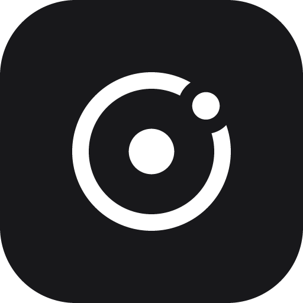
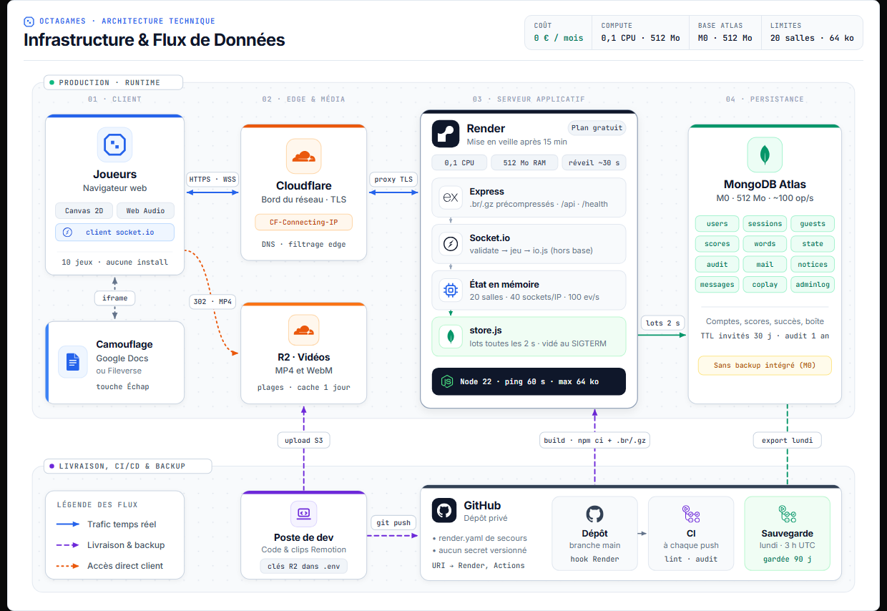
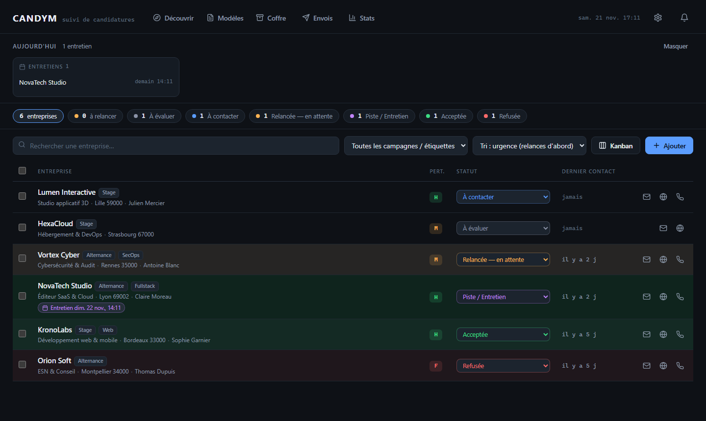
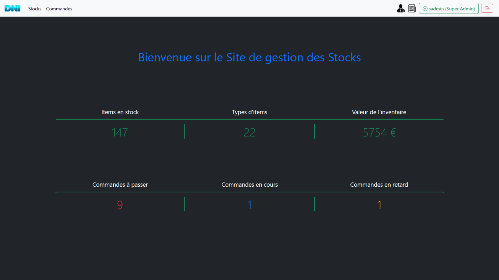
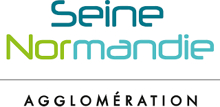
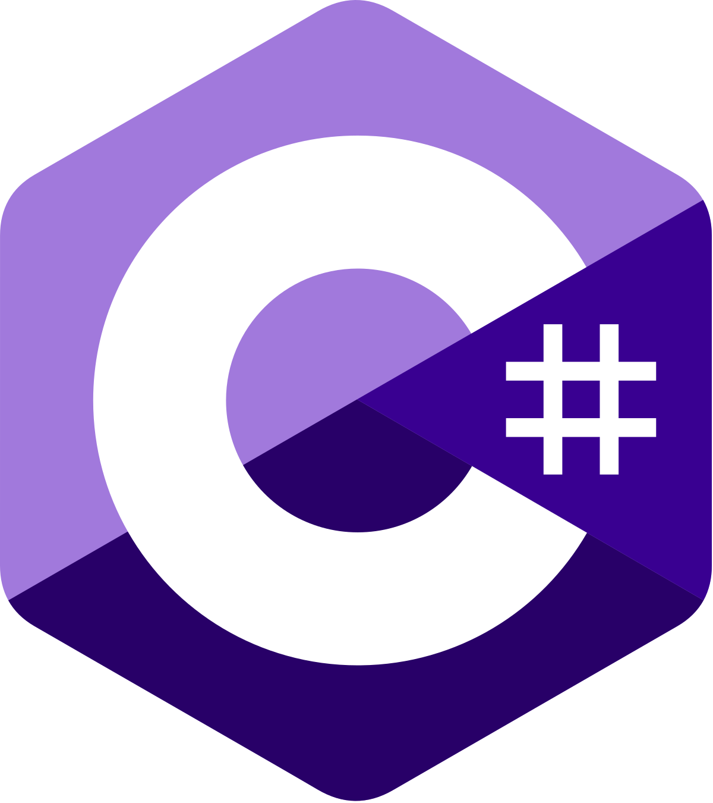
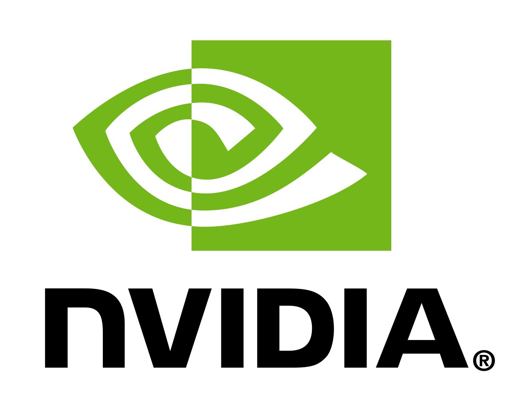
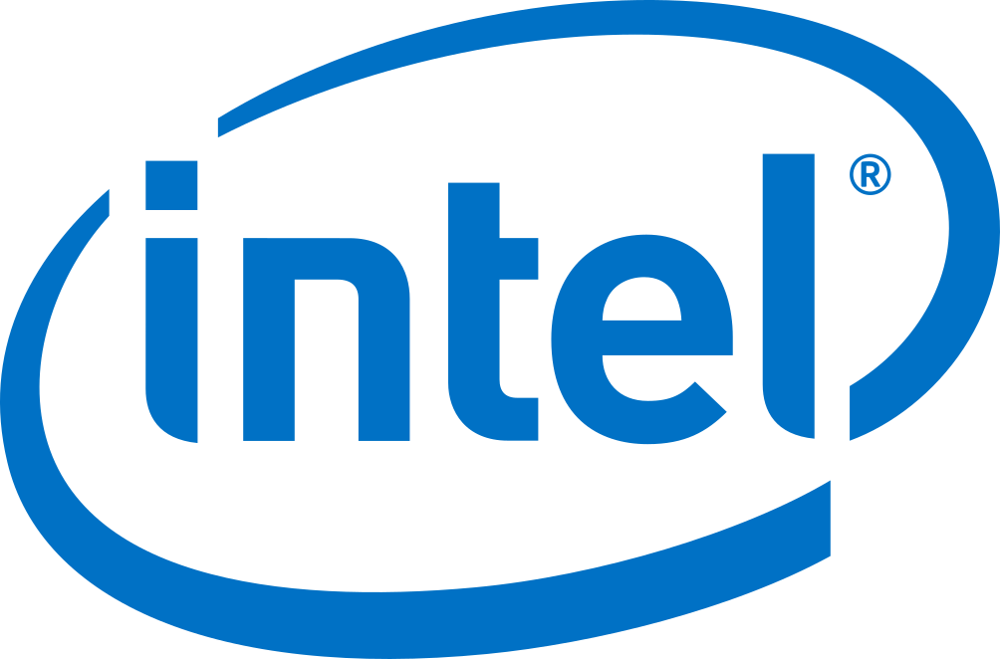
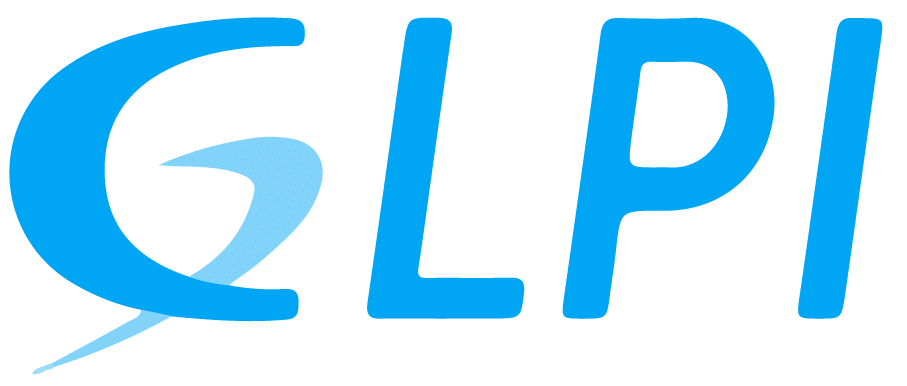

OctaGames · Architecture technique
// Projets BTS SIO SLAM
Réalisations professionnelles
Portfolio des projets et compétences développées durant la formation BTS SIO SLAM.
Personnel

Servym // Rust · Tauri 2 · AxumB1.4 · B1.5 · B1.6
Servym — Tableau de bord local
Tableau de bord desktop (Rust / Tauri 2) pour gérer ses projets locaux.
Personnel

B1.3 · B1.4 · B1.5 · B1.6
OctaGames — Plateforme de jeux temps réel
Plateforme web de 10 jeux multijoueurs temps réel (Node.js, Socket.io).
Personnel

B1.4 · B1.5 · B1.6
Candym — Suivi de candidatures
CRM local de candidatures : Kanban, relances, suivi IMAP et envoi SMTP.
Stage

B1.3 · B1.4 · B1.5 · B1.6
Gestion des stocks interne — DNI
App web Node.js / MySQL : suivi multi-sites, alertes et commandes auto.
Stage

B1.3 · B1.4 · B1.5
Site Annuaire interne — SNA
Annuaire interne développé en stage pour remplacer les fichiers Excel.
Formation
 Erasmove
// C# · .NET MAUI · MVVM
Erasmove
// C# · .NET MAUI · MVVM

B1.4 · B1.5
Application Erasmove
App desktop .NET MAUI (MVVM) de gestion de voyages Erasmus en équipe.
Formation
HC.
Portfolio BTS SIO
// HTML · CSS · JS
B1.6
Portfolio BTS SIO
Portfolio réalisé dans le cadre de ma formation BTS SIO.
Formation


B1.6
Veille technologique — Hardware & Software
Suivi continu de l'actu hardware/software sur AMD, NVIDIA et Intel.
Stage

B1.1 · B1.2
Gestion d'incidents sous GLPI — SNA
Gestion de tickets d'incidents durant le stage via GLPI.